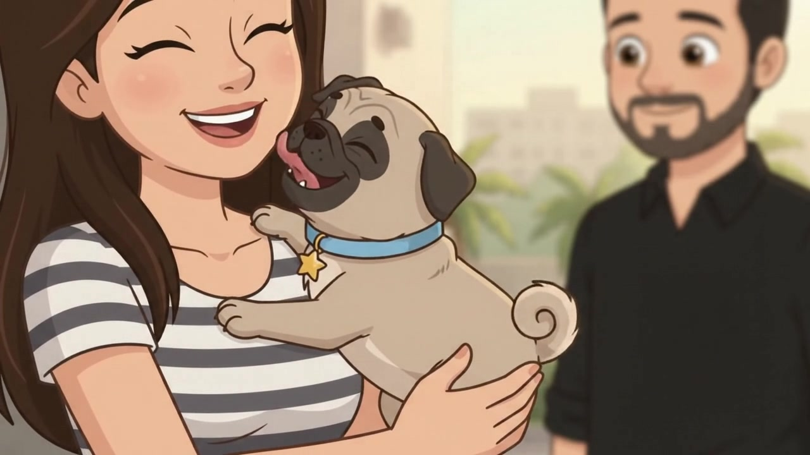
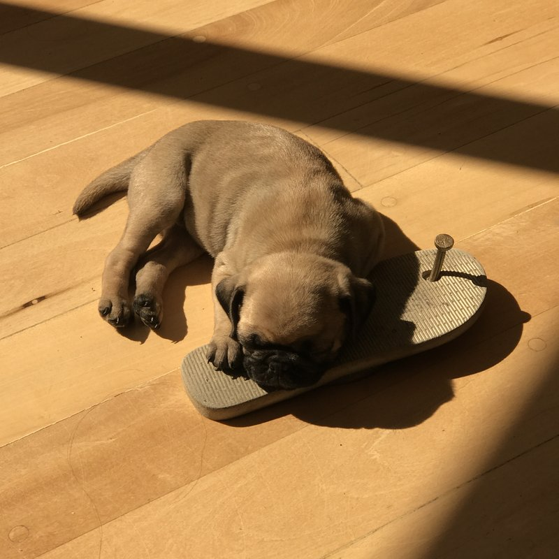
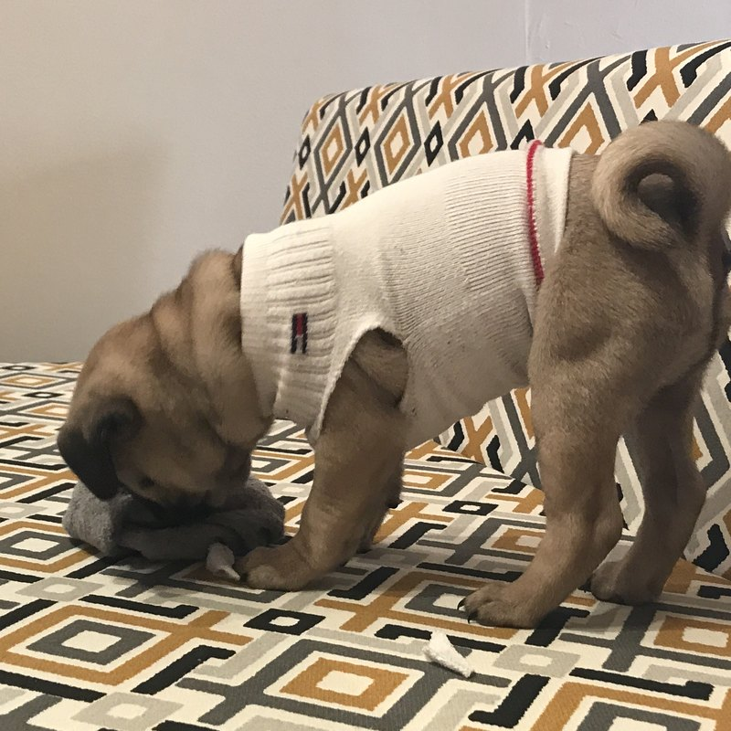
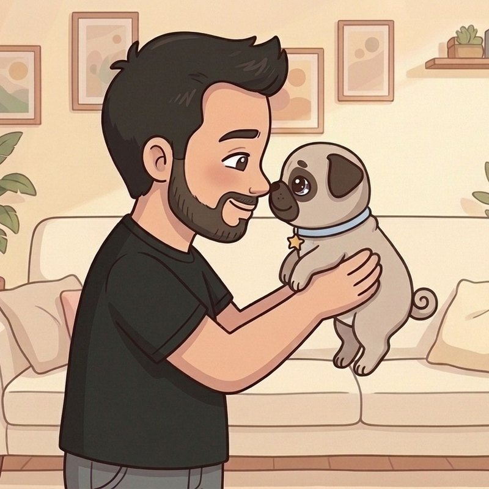

As Pugs Aventuras são de verdade! A Joy conta as histórias de quando era filhotinha, e a Jane, filha dela, está aqui com a gente.
A cada episódio novo, uma figurinha com uma foto da Joy de verdade é colada aqui. Assista na quarta-feira e volte para ver o álbum crescer!
#1?
 Figurinha #1
Figurinha #1
O lambeijo
Foi amor no primeiro lambeijo, bem na portaria do prédio!
Episódio 1
Assista ao Episódio 1 na quarta, 07/10, para colar esta figurinha!
#2?
Figurinha #2

Ploc!
A Joy descobriu que o pininho do chinelo do papai sobe!
Episódio 2
Assista ao Episódio 2 na quarta, 14/10, para colar esta figurinha!
#3?
Figurinha #3

Roupinha de meia
A primeira roupinha da Joy foi feita com uma meia do papai.
Episódio 3
Assista ao Episódio 3 na quarta, 21/10, para colar esta figurinha!
#4?
Figurinha #4

O papai babão
O papai não queria cachorro... e virou o maior babão da Joy!
Episódio 4
Assista ao Episódio 4 na quarta, 28/10, para colar esta figurinha!
#5?Vem aí num episódio novo!
#6?Vem aí num episódio novo!
#7?Vem aí num episódio novo!
#8?Vem aí num episódio novo!